VAMT 下载安装可参考：
https://cnman.github.io/?p=298
首先确认系统已启用Microsoft .NET Framework 3.5 SP1或已安装Microsoft .NET Framework 4.0+
其次安装Microsoft SQL Server Express(个人推荐 2012 SP4 Express)并打补丁
Microsoft® SQL Server® 2012 Service Pack 4 (SP4) Express
https://download.microsoft.com/download/A/4/3/A43F9D8D-5346-441A-ABAE-86C3AFE17B4D/SQLEXPR_x86_CHS.exe
https://download.microsoft.com/download/A/4/3/A43F9D8D-5346-441A-ABAE-86C3AFE17B4D/SQLEXPR_x64_CHS.exe
最后安装最新版本Windows ADK for Windows 10中的VAMT组件
ADK17133_onlyVAMT.ZIP
adksetup.exe /features OptionId.VolumeActivationManagementTool
VAMT的pkconfig在如下目录：
32位：C:\Program Files\Windows Kits\10\Assessment and Deployment Kit\VAMT3\pkconfig\
64位：C:\Program Files (x86)\Windows Kits\10\Assessment and Deployment Kit\VAMT3\pkconfig\
默认的pkconfig可以校验大部分（经测试1-550/18466≈97%）Win Vista/7/8/8.1/10、WinSrv 2008/2008R2/2012/2012R2/2016、Ofiice 2010/2013/2016的KEY，如果要校验其他产品（如VS 2010/2012/2014/2015/2017、SQL Server 2012/2014/2016等），需要自行添加相应产品的pkconfig。
下载
pkconfig.zip，如果你有其他新的pkconfig，请发邮件到admin@cnman.github.io
如何配合hnfeng的MS-KEY TOOL工具使用VAMT
首次使用VAMT建议把下面文件中的KEY先保存在MS-KEY TOOL目录下的\keys\OldKeys.txt中，以免校验这些KEY浪费时间。
被封KEY：
https://raw.githubusercontent.com/CNMan/balala/master/Blocked_Keys_VAMT.txt、
https://raw.githubusercontent.com/CNMan/balala/master/Blocked_Keys_PIDKEY.txt
伪造KEY：
https://raw.githubusercontent.com/CNMan/balala/master/Fake_Keys.txt
VAMT不支持的 NT 5.x KEY：
https://raw.githubusercontent.com/CNMan/balala/master/Unsupported_Keys.txt
未知KEY：
https://raw.githubusercontent.com/CNMan/balala/master/Undefined_Keys.txt
无效KEY：
https://raw.githubusercontent.com/CNMan/balala/master/Invalid_Keys.txt
MS-KEY TOOL找完KEY后，点击“存到文件”
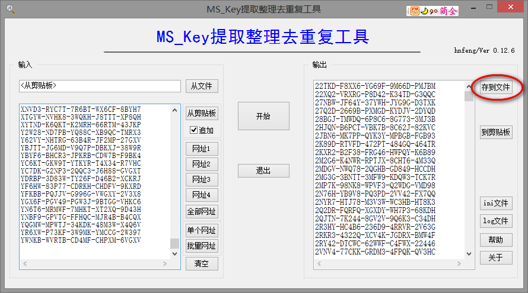
选择保存文件名和目录，文件名默认就行，目录
必须是OldKeys.txt所在目录
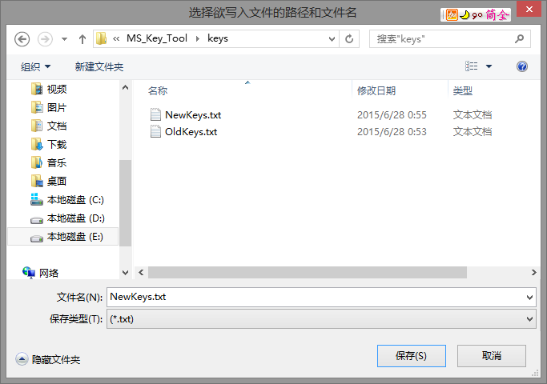
覆盖NewKeys.txt，维护好OldKeys.txt就行
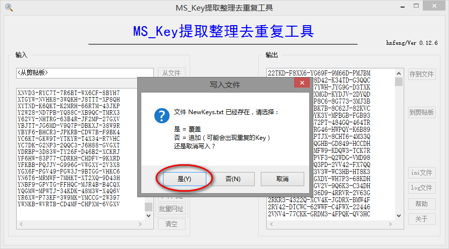
不打开NewKeys.txt
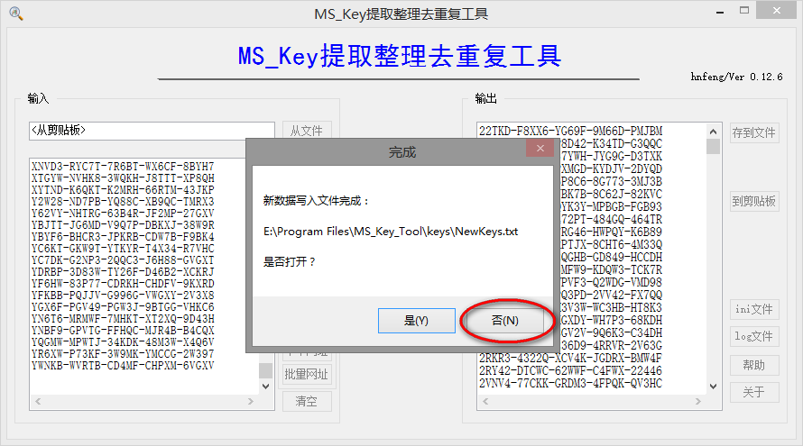
自动比较NewKeys.txt与OldKeys.txt
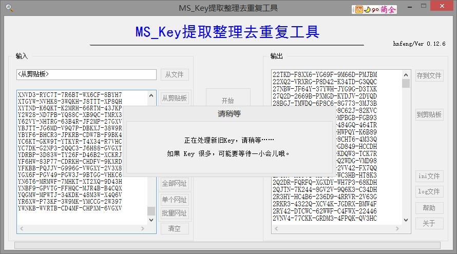
如果没有新KEY，则不需要任何操作；如果有新KEY，则会创建并打开_LatestKeys.txt，再把里面的KEY添加到VAMT校验即可
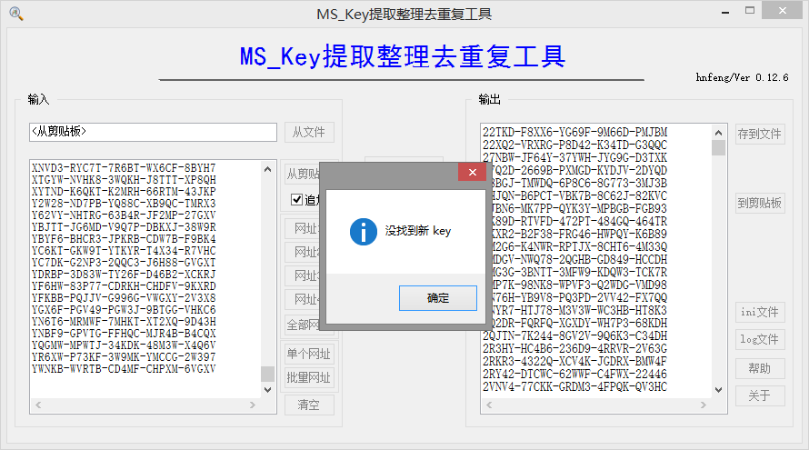
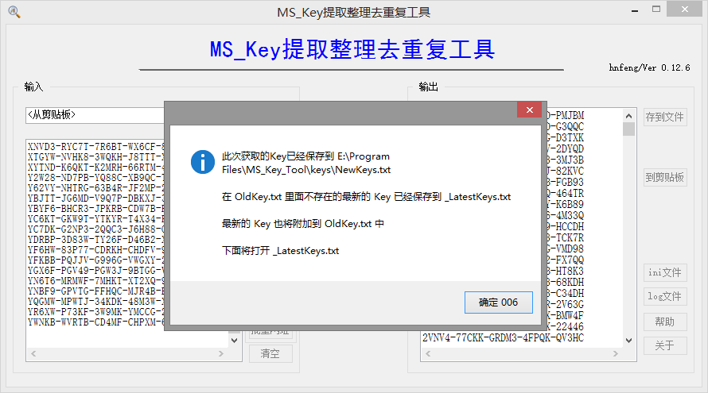
VAMT常用功能及操作说明
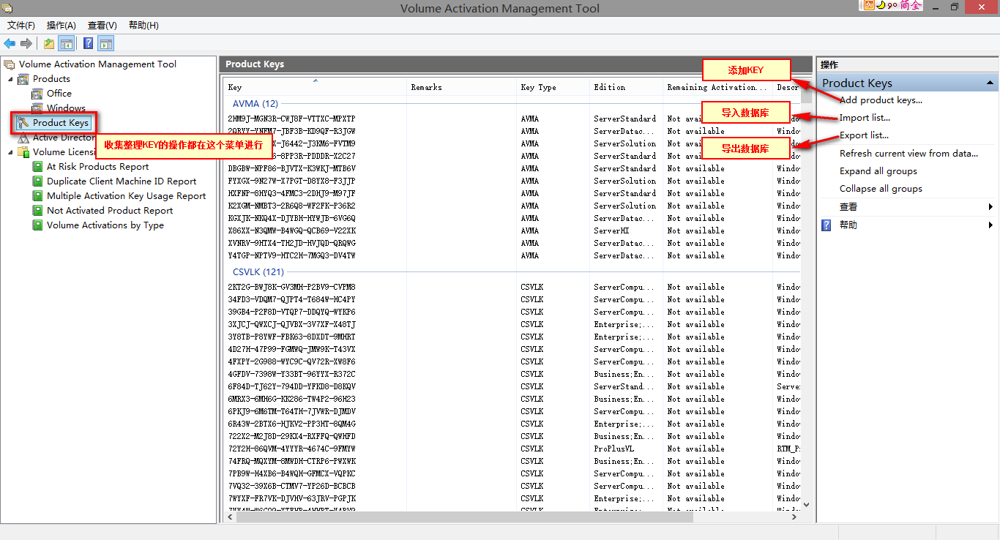
点击左边的“Product Keys”菜单，点击右边的“Add product keys”
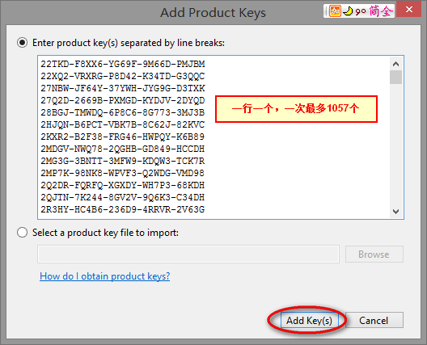
把要校验的KEY添加进去，一行一个，一次最多1057个，点击“Add key(s)”开始校验
校验过程中首次遇到VAMT不识别或不支持的KEY时，会询问是否校验剩余的KEY，点击“YES”继续校验
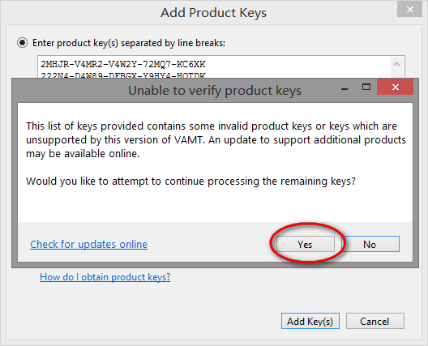
校验完成后，会告诉你有多少KEY添加成功
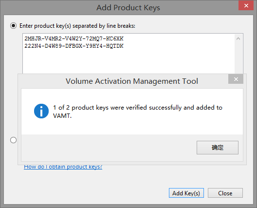
可以导出数据库(cilx格式)，留作日后重装系统或分享给别人导入用。
建议每次添加校验后都导出一下，以防误操作导致前功尽弃:)
刷新MAK剩余激活次数
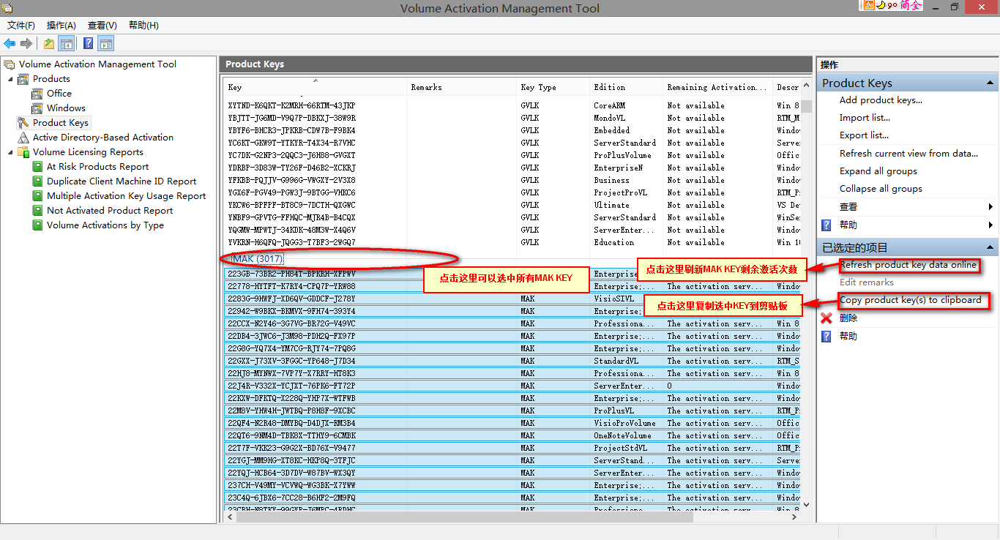
如果出现“已存在具有相同键的条目”错误，则需要用hnfeng的
DelFakeKeys工具处理VAMT导出的cilx数据库后，再导入重新刷新。
收集、整理、校验KEY很费时间，不要想一口吃成个胖子...o(∩_∩)o...哈哈！！！
最后来个数据库给大家测试用：
VAMT.cilx
如果你有几千甚至几万KEY需要校验加入VAMT，如何才能快速进行筛选呢？
我们需要借助
KEYINFO这个小工具。
KEYINFO校验KEY有以下几种结果：
①Invalid character in key.
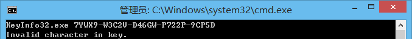
②The last character must not be an N.
③There may only be one N in a key.
④Invalid key. The hash is incorrect.
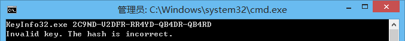
⑤The character N must be in the product key.
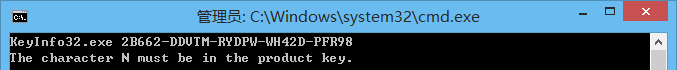
⑥有GroupId、KeyId、Secret、Hash
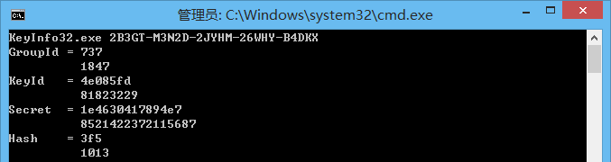
对于结果①②③④，这种KEY可以直接排除，不用校验。
对于结果⑤，先用
The Ultimate PID Checker选“Windows XP/Server 2013”校验一遍，排除一部分Windows XP/Server 2013 KEY，剩下的再加入VAMT校验。
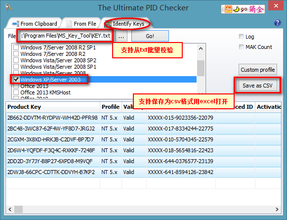
对于结果⑥，直接加入VAMT校验
几种结果对应的产品基本如下图：
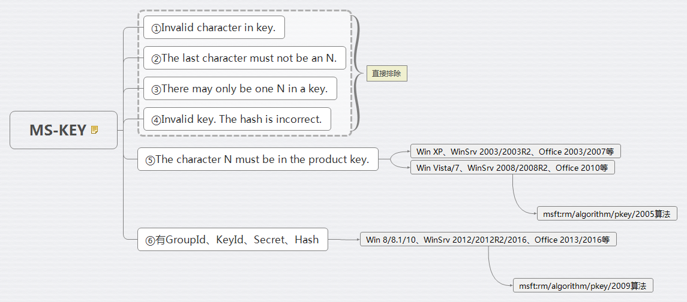
需要说明的是：
1、KEY格式：?????-?????-?????-?????-?????,?可以是BCDFGHJKMNPQRTVWXY2346789，若含N，则只能有一位是N且不能在最后一位。
2、符合msft:rm/algorithm/pkey/2005和msft:rm/algorithm/pkey/2009算法的KEY才可以“通过”VAMT校验。
3、符合msft:rm/algorithm/pkey/2005算法的KEY也有GroupId、KeyId、Secret、Hash，但KEYINFO只支持msft:rm/algorithm/pkey/2009算法。
4、The Ultimate PID Checker只支持校验一部分Windows XP/Server 2013的KEY，也不支持Office 2003/2007等，所以结果⑤通过排除法剩下的KEY也有部分“不能通过”VAMT校验。
5、符合msft:rm/algorithm/pkey/2005算法的KEY特征是“不含字母N”；符合msft:rm/algorithm/pkey/2009算法的KEY特征是“含字母N”。
6、符合msft:rm/algorithm/pkey/2009算法的KEY可以快速校验加入VAMT，一般大约10秒/个；而符合msft:rm/algorithm/pkey/2005算法的KEY则比较慢，速度取决于pkconfig的数量，一般会超过60秒/个。
用KEYINFO批量校验：
把KEY保存在KEY.txt，和KeyInfo32.exe放在同一个文件夹，运行批处理
keyinfo.cmd，生成KEYINFO.txt。
关于cilx数据库中KeyId标签的说明
VAMT导出的cilx数据库中标记为KeyId标签
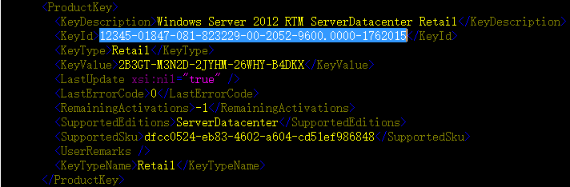
PIDKey中标记为Extended PID
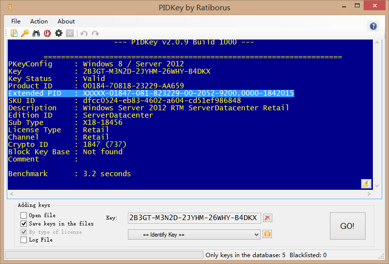
The Ultimate PID Checker中标记为Advanced ID
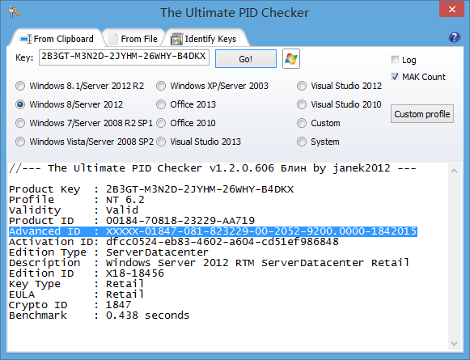
12345-01847-081-823229-00-2052-9600.0000-1762015
| 1 | 2 | 3 |4 | 5 | 6 | 7 | 8 |
第1段：unkonwn(VAMT中全部为12345，PIDKey和The Ultimate PID Checker中全部为XXXXX)
第2段：GroupID(如果大于等于100000则取后5位，不足5位的前面补0)
第3段：KeyID(不足9位的前面补0)
第4段：KeyType(00/01代表Retail、02代表OEM、03代表Volume)
第5段：OS Language Code(1033代表en-US、2052代表zh-CN)
第6段：OS Build Number
第7段：校验key时当天离当年1月1日的天数
第8段：校验key时当年年份
两个例子：
1、GroupID=1847(小于100000)
12345-01847-081-823229-00-2052-9600.0000-1762015
2、GroupID=100030(大于100000)
12345-00030-001-000147-03-2052-9600.0000-1762015
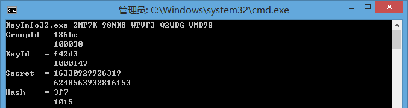
关于pkconfig文件
pkconfig文件可以用
PKeyConfig Reader读取。
这个程序是开源的：
https://github.com/VisualSoftware/PKeyConfigReader
以VAMT自带的
pkconfig_office15.xrm-ms为例：
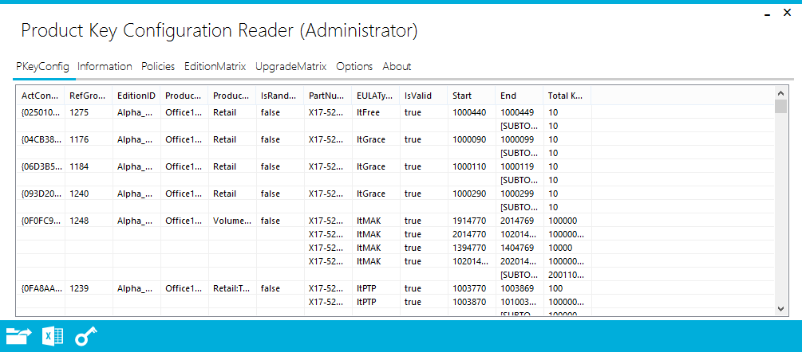
在程序中各字段看不全，可以导出为xlsx格式的
Excel文件查看：
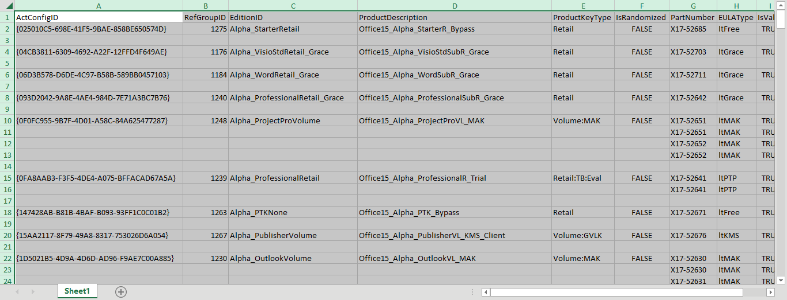
其中：RefGroupID对应KEYINFO校验的GroupId，Start/End对应KEYINFO校验的KeyId。
这些信息以
base64编码含在pkconfig_office15.xrm-ms中，解码以后就是
pkconfig_office15.xml，除了PKeyConfig Reader读取的信息之外，还包含有KEY的算法等。
关于msft:rm/algorithm/pkey/2005(2009)算法
2005和2009两种生成KEY的算法不同，分配KEY的策略也不同
2009算法生成的KEY，一个GroupId（大于1000）对应1种产品、1个版本、1种授权类型，校验速度很快，平均10s以下/个
2005算法生成的KEY，一个GroupId（小于1000）对应N种产品、N个版本、N种授权类型，校验速度很慢，平均60s以上/个
具体的GroupId对应什么，可以参考
pkconfig.csv
关于KEYINFO的几个参数
原始地址：
http://forums.mydigitallife.info/threads/37590-Windows-8-Product-Key-Decoding
缓存地址：
http://web.archive.org/web/20140925202848/http://forums.mydigitallife.info/threads/37590-Windows-8-Product-Key-Decoding
GroupId：理论有效值范围16进制0-ffffff，即10进制0-16777215，实际值可用PKeyConfigReader从pkconfig中读取RefGroupID列（10进制）
KeyId：理论有效值范围16进制0-3fffffff，即10进制0-1073741823，实际值可用PKeyConfigReader从pkconfig中读取Start/End列（10进制），Start/End给定了一个范围，具体到某个KEY就是唯一值
Secret：理论有效值范围16进制0-1fffffffffffff，即10进制0-9007199254740991，实际值只有微软知道咯，也别想去暴力猜中，为了一个KEY耗时万年不值:)
Hash：有一个表，可以在源代码中查看
KEYINFO作者可能有机会破解电话激活，但是失踪了....后有两位大神研究破解msft:rm/algorithm/pkey/2005算法，也无果而终...